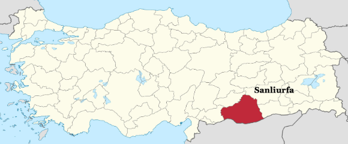

Urfa (Şanlıurfa)
Urfa, ook bekend als Şanlıurfa, is een historische stad in het zuidoosten van Turkije. Het staat bekend om zijn oude geschiedenis en religieuze betekenis, met talloze historische bezienswaardigheden en religieuze locaties. Urfa heeft een rijke culturele erfenis en trekt bezoekers aan met zijn traditionele ambachten en lokale markten. De stad heeft ook een levendige sfeer en een warme gastvrijheid, waardoor het een boeiende bestemming is voor reizigers die de cultuur en geschiedenis van Turkije willen verkennen.
